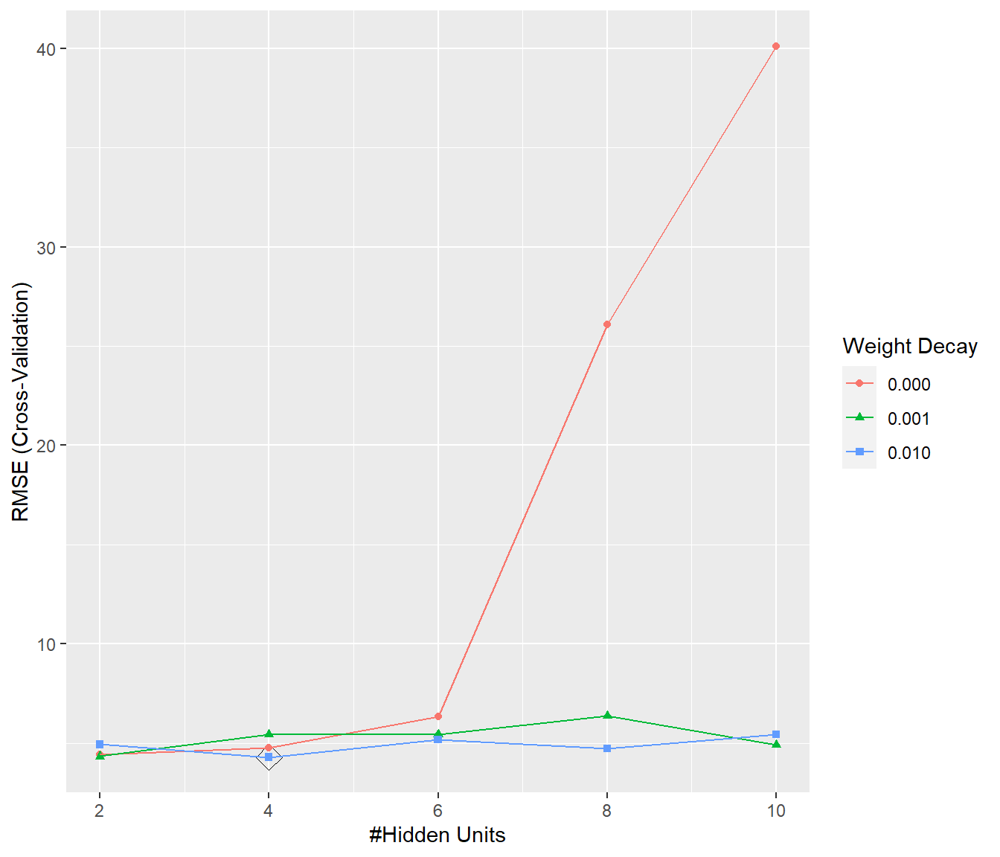
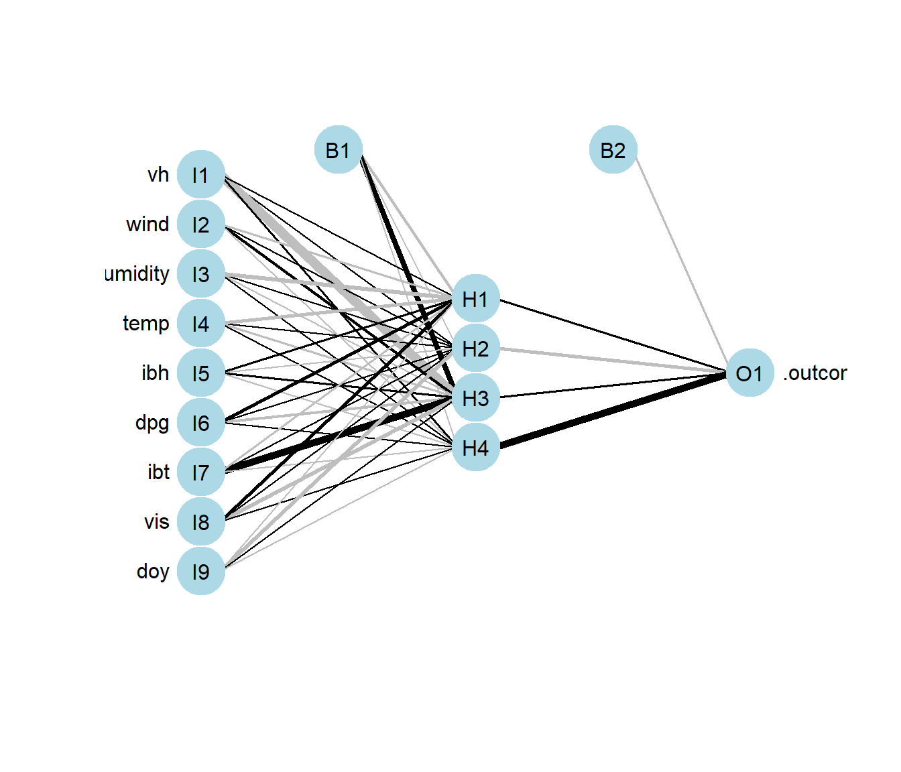
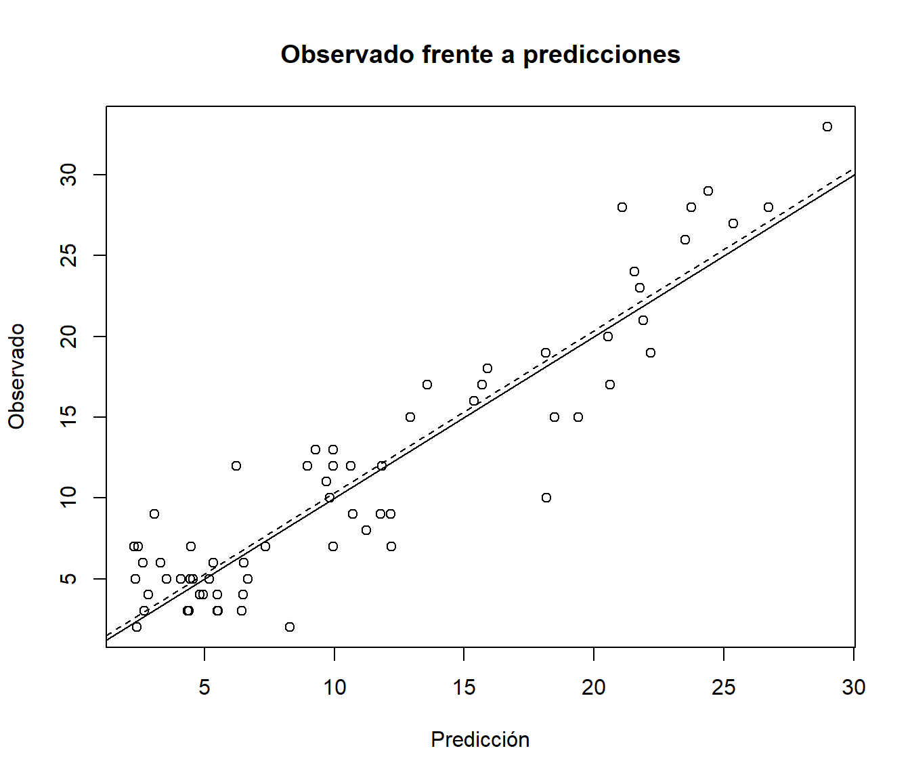

8.3 Implementación en R
Hay numerosos paquetes que implementan métodos de este tipo, aunque por simplicidad consideraremos el paquete nnet que implementa redes neuronales feed fordward con una única capa oculta y está incluido en el paquete base de R.
Para el caso de redes más complejas se puede utilizar por ejemplo el paquete neuralnet, pero en el caso de grandes volúmenes de datos o aprendizaje profundo la recomendación sería emplear paquetes computacionalmente más eficientes (con computación en paralelo empleando CPUs o GPUs) como keras, h2o o sparlyr, entre otros.
La función principal nnet() se suele emplear con los siguientes argumentos:
nnet(formula, data, size, Wts, linout = FALSE, skip = FALSE,
rang = 0.7, decay = 0, maxit = 100, ...)formulaydata(opcional): permiten especificar la respuesta y las variables predictoras de la forma habitual (e.g.respuesta ~ .; también implementa una interfaz con matricesxey). Admite respuestas multidimensionales (ajustará un modelo para cada componente) y categóricas (las convierte en multivariantes si tienen más de dos categorías y emplea softmax en los nodos finales). Teniendo en cuenta que por defecto los pesos iniciales se asignan al azar (Wts <- runif(nwts, -rang, rang)) la recomendación sería reescalar los predictores en el intervalo \([0, 1]\), sobre todo si se emplea regularización (decay > 0).size: número de nodos en la capa oculta.linout: permite seleccionar la identidad como función de activación en los nodos finales; por defectoFALSEy empleará la función logística o softmax en el caso de factores con múltiples niveles (si se emplea la interfaz de fórmula, con matrices habrá que establecersoftmax = TRUE).skip: permite añadir pesos adicionales entre la capa de entrada y la de salida (saltándose la capa oculta); por defectoFALSE.decay: parámetro \(\lambda\) de regularización de los pesos (weight decay); por defecto 0. Para emplear este parámetro los predictores deberían estar en la misma escala.maxit: número máximo de iteraciones; por defecto 100.
Como ejemplo consideraremos el conjunto de datos earth::Ozone1 empleado en el capítulo anterior:
data(ozone1, package = "earth")
df <- ozone1
set.seed(1)
nobs <- nrow(df)
itrain <- sample(nobs, 0.8 * nobs)
train <- df[itrain, ]
test <- df[-itrain, ]En este caso emplearemos el método "nnet" de caret para preprocesar los datos y seleccionar el número de nodos en la capa oculta y el parámetro de regularización.
Como emplea las opciones por defecto de nnet() (diseñadas para clasificación),
estableceremos linout = TRUE (la alternativa sería transformar la respuesta a rango 1) y aumentaremos el número de iteraciones (aunque seguramente sigue siendo demasiado pequeño).
## model parameter label forReg forClass probModel
## 1 nnet size #Hidden Units TRUE TRUE TRUE
## 2 nnet decay Weight Decay TRUE TRUE TRUEtuneGrid <- expand.grid(size = 2*1:5, decay = c(0, 0.001, 0.01))
set.seed(1)
caret.nnet <- train(O3 ~ ., data = train, method = "nnet",
preProc = c("range"), # Reescalado en [0,1]
tuneGrid = tuneGrid,
trControl = trainControl(method = "cv", number = 10),
linout = TRUE, maxit = 200, trace = FALSE)
ggplot(caret.nnet, highlight = TRUE)
Analizamos el modelo resultante:
## a 9-4-1 network with 45 weights
## options were - linear output units decay=0.01
## b->h1 i1->h1 i2->h1 i3->h1 i4->h1 i5->h1 i6->h1 i7->h1 i8->h1 i9->h1
## -8.66 3.74 -5.50 -18.11 -12.83 6.49 14.39 -4.53 14.48 -1.96
## b->h2 i1->h2 i2->h2 i3->h2 i4->h2 i5->h2 i6->h2 i7->h2 i8->h2 i9->h2
## -2.98 1.78 0.00 1.58 1.96 -0.60 0.63 2.46 2.36 -19.69
## b->h3 i1->h3 i2->h3 i3->h3 i4->h3 i5->h3 i6->h3 i7->h3 i8->h3 i9->h3
## 25.23 -50.14 9.74 -3.66 -5.61 4.21 -11.17 39.34 -20.18 0.37
## b->h4 i1->h4 i2->h4 i3->h4 i4->h4 i5->h4 i6->h4 i7->h4 i8->h4 i9->h4
## -3.90 4.94 -1.08 1.50 1.52 -0.54 0.14 -1.27 0.98 -1.54
## b->o h1->o h2->o h3->o h4->o
## -5.32 4.19 -14.03 7.50 38.75Podemos representarlo gráficamente empleando el paquete NeuralNetTools:

Por último evaluamos las predicciones en la muestra de test:
pred <- predict(caret.nnet, newdata = test)
obs <- test$O3
plot(pred, obs, main = "Observado frente a predicciones",
xlab = "Predicción", ylab = "Observado")
abline(a = 0, b = 1)
abline(lm(obs ~ pred), lty = 2)
accuracy <- function(pred, obs, na.rm = FALSE,
tol = sqrt(.Machine$double.eps)) {
err <- obs - pred # Errores
if(na.rm) {
is.a <- !is.na(err)
err <- err[is.a]
obs <- obs[is.a]
}
perr <- 100*err/pmax(obs, tol) # Errores porcentuales
return(c(
me = mean(err), # Error medio
rmse = sqrt(mean(err^2)), # Raíz del error cuadrático medio
mae = mean(abs(err)), # Error absoluto medio
mpe = mean(perr), # Error porcentual medio
mape = mean(abs(perr)), # Error porcentual absoluto medio
r.squared = 1 - sum(err^2)/sum((obs - mean(obs))^2) # Pseudo R-cuadrado
))
}
accuracy(pred, obs)## me rmse mae mpe mape r.squared
## 0.3321276 3.0242169 2.4466958 -7.4095987 32.8000107 0.8586515